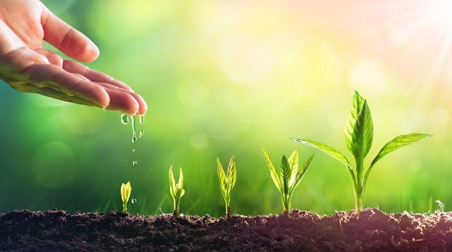
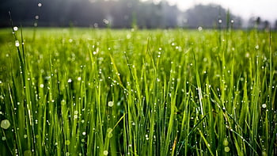
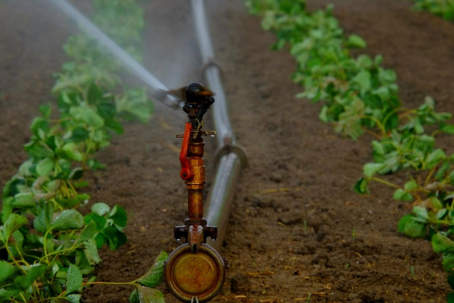
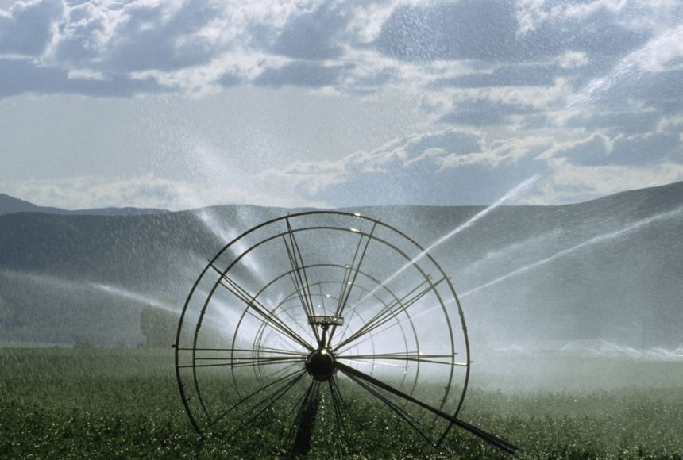

Irrigation is a fundamental practice in agriculture that plays a pivotal role in ensuring food security, economic development, and sustainable water management. By providing a reliable water supply to crops, irrigation helps overcome the challenges of water scarcity, droughts, and unreliable rainfall patterns. However, it is essential to adopt efficient and sustainable irrigation practices to minimize water wastage and mitigate potential environmental impacts.
Surface irrigation is one of the oldest and simplest methods of irrigation. Water is applied to the soil surface and allowed to infiltrate and distribute to the root zone by gravity. This method includes techniques such as flood irrigation, furrow irrigation, and border irrigation. It is commonly used for row crops, orchards, and large-scale farming.
Sprinkler irrigation involves the use of sprinklers to distribute water over the crops or soil surface. Water is sprayed into the air and falls as droplets onto the plants or soil. This method is flexible and adaptable to various crop types and terrains. Sprinkler irrigation can be subdivided into different types, including center pivot, lateral move, and hand-move systems.
Drip irrigation, also known as micro-irrigation, is a precise and efficient method of irrigation. It delivers water directly to the plant roots through a network of pipes, tubing, and emitters. Drip irrigation minimizes water wastage by reducing evaporation and runoff. It is particularly suitable for areas with limited water availability and is commonly used in orchards, vineyards, and vegetable gardens.
Manual irrigation methods involve the use of handheld tools or containers to apply water to plants. This method includes techniques such as watering cans, buckets, and hoses. Manual irrigation is often used for small gardens, container plants, and landscaping.
|  |  |
|  |  |